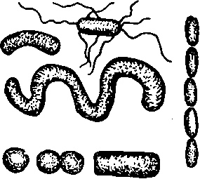

Chapter II. Plants And Animals Related To Health
Description
This section is from the book "The Human Body And Health", by Alvin Davison. Also available from Amazon: The Human Body and Health.
Chapter II. Plants And Animals Related To Health
Bacteria
Bacteria are also called microbes or germs. There are hundreds of kinds of bacteria and all are so small that a million together would not make a mass so large as the head of a pin. They are of various shapes. Most of them are straight, curved, or twisted rods. Some have the form of a ball.
Bacteria occur nearly everywhere. A bit of dirt as large as a pea may contain a million bacteria, and a hundred thousand of them are commonly present in a cup of water. More than a million bacteria are lodged on the surface of the body and billions dwell in the mouth and intestine.
Many kinds of bacteria are useful, but a few kinds sometimes cause serious disease when they grow in other plants, or in the bodies of animals or man.
Nature Of Bacteria
A hundred years ago many people thought that dead matter could of itself change into living plants or animals. When meat broth is put away in the cupboard for a day or two, the microscope shows it to be full of tiny forms of life. It is now known that this life does not start from the broth, but consists of bacteria. They are constantly floating through the air and can be kept out of food by placing it in airtight jars. The food and the jars must first be boiled to kill the bacteria in them. The spoiling or souring of food of any kind is generally due to bacteria.
Fig. 2. Harmless bacteria so numerous in drinking water that a person often takes a half-million into his stomach daily. Much enlarged.
Need Of Bacteria
Experiment shows that higher life depends upon the help of bacteria. The dead leaves, grass, fallen trees and the waste matter of the barnyard cannot rot or decay without the aid of bacteria. If these little plants were destroyed, the surface of the earth would soon become covered with dead matter.
These ever-present bacteria change the dead plants and animals and all other waste products of life into a food which the new plants can use the next season. Some bacteria feed upon living animals instead of dead matter. It is these that cause disease.
Bacteria Of Disease
Fifty million persons are every year forced to the sick bed in this country and Europe by bacteria. Each disease is caused by a certain kind of germs and if these are kept out of the body, the sickness cannot occur.
Fig. 3. Useful bacteria which change dead matter into food for the grass, wheat and corn. Much enlarged.
Some of the common diseases resulting from bacteria are pneumonia, measles, typhoid fever, diphtheria, sore throat, grippe and tuberculosis. When the germs of these diseases get into the body, they devour the tissues and give off poisons.
Fig. 4. The germs causing various diseases. Much enlarged.
How Bacteria Get Into The Body
Bacteria nearly always enter the body through the mouth. The germs of typhoid fever generally reach the system with water which has received the waste matter from a typhoid patient. The bacteria of pneumonia, sore throat, diphtheria and grippe are frequently received from the drinking cup, pencils other objects used by persons recently recovered from these diseases. The germs are sometimes breathed in with dust. The bacteria of tuberculosis reach the body with air or food or are scraped from the drinking cup or other objects used by the sick.
Fig. 5. Drawing of a germ at intervals of ten minutes while growing.
Fig. 6. Bacteria. The white bodies are spores.
If nurses and patients would be careful to destroy with boiling water or formalin the germs which leave the bodies of the sick in the spit and other excretions, there would be fewer bacteria to make people sick.
How Bacteria Grow
When supplied with food and kept warm, bacteria grow very rapidly. Cold makes them grow more slowly. One plant produces two new ones by separating in the middle. This can occur every fifteen minutes so that one germ can produce millions in a single day.
In some bacteria deprived of food and moisture, the contents of the plant collect in one part and become surrounded by a tough coat. This part with its coat is a spore. Boiling water will kill most spores in less than ten minutes. Our common disease bacteria do not have spores and therefore they are killed by being boiled one minute.
Mold
Mold belongs to the group of plants known as fungi. They have no light green coloring matter in them and cannot feed on the air as plants with green leaves do.
Mold often forms white or greenish patches on bread or fruit in a damp cellar. It is made of fine threads from which other hairlike branches stick up into the air. These branches bear on their ends little knobs containing dozens of tiny balls called spores. These spores break loose and float about in the dust. When they fall upon moist food they sprout and grow into a patch of mold. The spores are hard to kill but eight minutes in boiling water will usually cause their death. Some kinds of mold grow on the body and cause disease.
Fig. 7. Bread mold much enlarged. Note the tiny spores bursting from their case in the right upper corner.
Fig. 8. Yeast plants much enlarged. Note the bud at the end in several plants about to form a new plant.
Barber's itch and ring-worm are caused by molds growing in the skin. The spores are carried from one face to another by the un-cleaned razor, towel or brush. Other diseases are sometimes caught by using soiled towels in public places.
Yeast
This is a tiny round plant too small to be seen without the microscope. It is common on fruit. One kind of yeast is used in making bread. It changes the sugar in the dough into alcohol and a gas. The gas pushes apart the particles of dough and makes it light.
Yeast is also used in making beer, wine, whisky and other alcoholic drinks which often cause much ill health and unhappiness. It is the yeast plant which gets into cider and makes it work or turn sour. The biting taste is due to the alcohol and carbon dioxide.
Fig. 9. A flea which carries the germs of plague from the sick to the well.
Animal Parasites
Any plant or animal which feeds upon another living plant or animal without at once destroying it, is a parasite. The bacteria of disease are all parasites. Some animals live in the human body and produce disease. Yellow fever, sleeping sickness and malaria are caused by tiny animals which get into the body by the bite of a fly or mosquito. The plague which has killed millions of people in Asia and some in our own country is caused by bacteria, but the germs are usually put beneath the skin by the bite of bugs or fleas which have been sucking blood from sick persons or from rats.
The Itch Mite And Head Lice
The itch was once a very common disease. When it was discovered that a little spider living in the skin was the cause of the continuous itching, a way of killing it was soon found (Fig. 10). The disease is now easily cured by an ointment which any physician can supply.
Tiny six-legged insects called head lice sometimes live among the hair. They cause continuous itching and sleeplessness. They are easily killed by thoroughly rubbing the scalp with equal parts of olive oil and coal oil before going to bed. The hair should then be kept from soiling the linen by wrapping a towel about the head. In the morning the head should be washed with soap and equal parts of vinegar and hot water to remove the tiny white eggs clinging to the hair. This treatment should be given two or three times.
Fig. 10. The tiny spider which causes the itch when living in the skin. Much enlarged.
Overcoming The Parasites
Owing to the fact that many sick persons through carelessness let disease germs escape from their bodies, everybody is likely to get some of these enemies into his body. The studies of physiology and hygiene have shown that persons may prevent many of them from entering the body or even from growing after they are in the body. Prevention of the sickness which they cause, as well as of other kinds of sickness, depends much upon understanding the plan of the body, the care and use of food, and the care and use of the organs as explained in the following chapters.
Practical Questions
1. Give two other names for bacteria. 2. What is the form of bacteria? 3. Where are bacteria found? 4. When may bacteria be harmful? 5. How may bacteria be kept away from food? 6. Of what use are some bacteria? 7. State a fact showing that bacteria cause much sickness. 8. Name some diseases due to bacteria.
9. How do the germs of typhoid fever often get into the body?
10. State how the bacteria of other diseases may enter the body.
11. What should nurses and patients do to prevent sickness in other persons? 12. Describe how bacteria grow. 13. What is a spore? 14. Why are some bacteria harder to kill than others? 15. Describe mold. 16. What kinds of mold cause disease? 17. What is yeast? 18. Describe the use of yeast. 19. What is a parasite? 20. Name some diseases caused by tiny animals living in the body. 21. Why should one having itch not sit near or handle things to be used by other persons? 22. Why should one with head lice not use another person's brush or hat? 23. How can we prevent sickness from parasites?
Suggestions For The Teacher
The presence of mold germs in dust may easily be shown in the following manner: Rub a piece of bread across one board of a dusty floor and then lay it soiled-side up in a saucer containing two table-spoonfuls of water. Cover with a bowl and let it remain in a warm place from three to six days. The white threads of mold may then be seen and on the ends of the upright branches are tiny balls each containing a hundred or more spores.
Continue to:
- prev: Chapter I. The Human Body As A Living Machine
- Table of Contents
- next: Chapter III. The Plan Of The Human Body